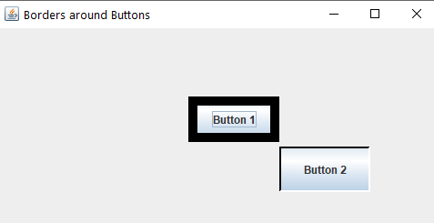

Delegation-event-model
10. Java Program to Create and Set Border to Push Buttons
Code
/*Java Program to draw borders around Push Button*/
import javax.swing.*;
import java.awt.*;
import javax.swing.border.*;
class pro10
{
//Driver function
public static void main(String args[])
{
//Create a frame
JFrame frame=new JFrame("Borders around Buttons");
frame.setSize(500,500);
frame.setLayout(null);
frame.setBackground(Color.white);
frame.setDefaultCloseOperation(JFrame.EXIT_ON_CLOSE);
//Create push buttons
JButton button=new JButton();
JButton button1=new JButton();
button=new JButton("Button 1");
button.setBounds(210,75,100,50);
frame.add(button);
button1=new JButton("Button 2");
button1.setBounds(310,130,100,50);
frame.add(button1);
//Create different borders
LineBorder thick;
BevelBorder bevel;
thick=new LineBorder(Color.black,10);
bevel=new BevelBorder(BevelBorder.RAISED,Color.black,Color.white);
//Add borders to buttons
button.setBorder(thick);
button1.setBorder(bevel);
//Display frame
frame.setVisible(true);
}
}
Output
